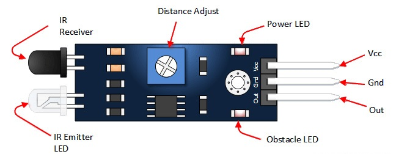
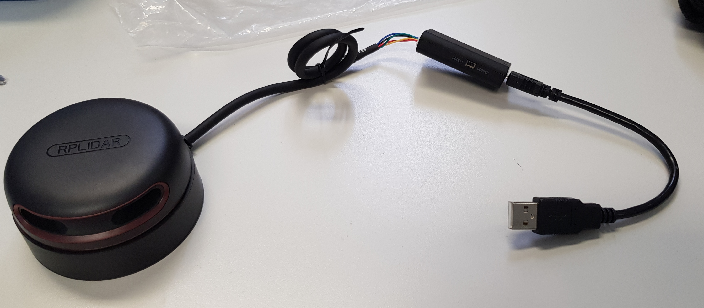

Documentation technique de Voiture Assistée
Résumé
Voiture assistée est un projet d'étude portant sur les voitures autonomes et leurs fonctionnement. Ce projet me fût proposé par M. Bonvin étant donné que la première ébauche du cahier des charges comportait en une simulation de voiture autonome mais ce dans une application windows form. M. Bonvin ayant entendu parler de mon projet, il a sû amener un côté plus intéressant et professionnel dans le travail que je vais devoir réaliser. Étant donné la découverte des différents appareils utilisé pour ce projet, la plus value sera surtout l'acquisition de nouvelles connaissances dans le domaine de l'informatique physique. Par conséquent, le but du projet est de réaliser une voiture se déplaçable à l'aide une interface web et qui sait se déplacer par elle même en évitant les obstacles sur sa route.
Abstract
Voiture assistée is a study project about autonomous cars and their functioning. This project was proposed to me by Mr. Bonvin since the first draft of the specifications included a simulation of an autonomous car but in a windows form application. Mr. Bonvin heard about my project, he knew how to bring a more interesting and professional side in the work that I will have to realize. Considering the discovery of the different devices used for this project, the added value will be especially the acquisition of new knowledge in the field of physical computing. Therefore, the goal of the project is to realize a car that can be moved by a web interface and that knows how to move by itself and which avoids obstacles on its way.
Poster
Cahier des charges
Titre du projet
Le titre du projet est Voiture assistée car le but du projet est d'en réaliser une.
Contexte
Ce projet m'a été proposé par M. Bonvin car il a vu que j'allais faire une simulation de voiture autonome, il s'est dit que l'on pourrait tourner la chose autrement. Il a une multitude de Raspberry Pi, de composants ainsi qu'une voiture LEGO controlable. C'est pourquoi il m'a dirigé vers une programmation utilisant des capteurs et du bluetooth.
Objectif
L'objectif principale de ce projet est de réaliser une voiture capable de se déplacer d'un point A à un point B en évitant les différents obstacles sur sa route. Pour ce faire, il faudra trouver un moyen de communiquer avec le Technic Hub afin de mouvoir la voiture. Ensuite, il faudra faire fonctionner indépendamment les différents capteurs. Pour ensuite créer un algorithme événementiel gérant les différentes pondérations des messages que les capteurs enverront.
Technologies et matériels utilisés
Logiciels
- Visual Studio Code
- Python
- Flask
- Github
- Markdown
- QCAD
- Photoshop CS6
- Pencil
Matériels
- Raspberry Pi 0 WiFi
- Raspberry Pi 4B
- 2 Caméra infrarouges (PI NoIR)
- 4 phares (Bright Pi v1.0)
- GPS (Ultimate GPS Breakout v3)
- Émetteur WiFi (ASUS RT-AC58U)
- LEGO 4x4 X-trem Off-Roader
- Détecteur infrarouge (Flying-Fish)
- Radar 360 (RPLiDAR A2M8)
Environnement de développement
Pour me connecter au Raspberry Pi sur lequel je travail, j'utilise :
- Remote SSH pour éditer le code
- Il s'agit d'une extension Visual Studio Code disponible ici
- Github pour publié mon code écrit sur le Raspberry Pi et pour mettre à disposition la documentation technique ainsi que le journal de bord
- RealVNC pour me connecter à distance à l'interface graphique du Raspberry Pi
- Il s'agit d'un logiciel créant un serveur et un client permettant de contrôler à distance l'écran d'un autre ordinateur, disponible ici.
Description détaillée de ce que l'application fait
La voiture est télécommandable à distance à l'aide d'une interface web. Sur le site internet, on a accès à l'état des différents capteurs ainsi que les données qu'ils envoient.
Plans de la voiture
 Dans le croquis du plan de la voiture présent ci-dessus, je vais énoncé le rôle de chaque composant.
Dans le croquis du plan de la voiture présent ci-dessus, je vais énoncé le rôle de chaque composant.
- Les phares sont représenté par le Bright Pi
- Les détecteurs de sol placés au niveau des roues sont représenté par le Flying-Fish
- Le Raspberry Pi 4 est représenté par RSP 4
- Le Raspberry Pi 0 WiFi est représenté par RSP 0 W
- Le scanner 360° est représenté par le Lidar
En comparaison, voici de quoi est équipée une vraie voiture autonome :
Schéma explicatif de l'application
L'application offre plusieurs pages.
Interface utilisateur de l'application
Une page d'interface utilisateur, pour avoir accès aux informations des capteurs ainsi que leurs états.

Interface télécommande
Une page de télécommande pour la voiture.
En mode manuel
L'utilisateur déplace la voiture à l'aide de la manette disponible sur le site web.

En mode automatique
La voiture se déplace de manière rectiligne en évitant les obstacles sur sa route.

Contact
| Status | Nom | Prénom | Numéro de téléphone | |
|---|---|---|---|---|
| Élève | Ackermann | Gawen | gawen.ackrm@eduge.ch | +41 79 88 98 69 4 |
| Professeur de diplôme | Bonvin | Pascal | edu-bonvinp@eduge.ch | +33 6 32 17 84 11 |
Structure du projet
├── code
│ ├── Bluetooth
│ ├── Bright Pi
│ ├── Camera
│ ├── Flask
│ ├── Lidar
│ └── OpenCV
├── docs
│ ├── images
│ ├── plans
│ ├── documentation_technique.md
│ ├── index.md
│ ├── logbook.md
│ └── requirements.txt
├── site
│ ├── assets
│ ├── documentation_technique
│ ├── images
│ ├── logbook
│ ├── plans
│ ├── search
│ ├── 404.html
│ ├── index.html
│ ├── sitemap.xml
│ └── sitemap.xml.gz
├── mkdocs.yml
└── README.md
Développement
Description détaillée de chaques capteurs
Raspberry Pi
Il s'agit d'un mini ordinateur de la taille d'une carte de crédit équipés de différents capteurs, cela dépends du modèle.
Mise en place
En fonction du modèle du Raspberry Pi il faut flasher les cartes SD avec différents OS avec le Raspberry Pi Imager :
- Pour un Raspberry Pi 4, installé la version
Raspberry Pi OS Full (32-bit)pour faire les tests à l'aide d'une interface graphique - Pour un Raspberry 0 WiFi, installé la version
Raspberry Pi OS Lite (32-bit)utilisé juste pour transiter des données
Utilisation
Un Raspberry Pi 4B est constitué des différents éléments :
 Pour le GPIO, voici les pins disponibles :
Pour le GPIO, voici les pins disponibles :
") À noter, la pin numéro 1 se situe à côté du module Bluetooth tandis que la pin 39 se situe en diagonal du
À noter, la pin numéro 1 se situe à côté du module Bluetooth tandis que la pin 39 se situe en diagonal du PoE HAT Header.
Caméra
La caméra est un module permettant d'avoir accès à un flux vidéo.
Mise en place
J’ai utilisé le guide de la caméra disponible sur https://magpi.raspberrypi.org/books. Pour commencer, j’ai activé la caméra dans le panneau de configuration du Raspberry Pi, puis j’ai branché la caméra dans l’emplacement prévu qui se situe entre la prise jack et les ports HDMI.

Le ruban de la caméra doit être placé de sorte à ce que la languette bleue fasse face à la prise jack. Pour m’assurer que la caméra soit fonctionnelle, j’utilise la commande suivante pour prendre une photo raspistill -o test.jpg
Utilisation
Pour vérifier qu'un flux vidéo pouvait être lu, j'ai utilisé le code ci dessous :
from picamera import PiCamera
from time import sleep
camera = PiCamera()
camera.start_preview()
sleep(5)
camera.stop_preview()
À noter, il est nécessaire d'exécuter ce code depuis le Raspberry Pi et non par VNC, car l'affichage de la prévisualisation du flux ne s'affiche pas. D'après ce post disponible sur StackEchange, il semblerait que l'aperçu de la caméra soit géré à un bas niveau dans le processeur graphique et par conséquent n'est visible que par le moniteur directement branché au Raspberry Pi.
Phare (Bright Pi v1.0)
Le Bright Pi est un module comportant 4 leds infrarouges situées aux extrémitées et au centre 8 leds.
Mise en place
Pour l’utilisation du Bright Pi, je me suis basé sur le guide disponible à l’adresse suivante : https://learn.pi-supply.com/make/bright-pi-quickstart-faq/. J’ai commencé par activer l’I2C dans le panneau de configuration du Raspberry Pi puis j’ai branché les pins aux emplacements indiqués dans le guide de démarrage. Les couleurs ci-dessous doivent être respectées (pour le placement uniquement).

Pour s'assurer que le branchement soit correct, il est nécessaire d'utiliser la commande i2cdetect -y 1. Ceci devrait être affiché dans la console :

Pour tester le Bright Pi, il est nécessaire d'avoir le kit de développement disponible sur ce repos Github.
Utilisation
Une fois cela fait, il faut importer les éléments concernant le brightpi avec
from brightpi import *
import time
Pour faire clignoter les leds manuellement (à l’aide de lignes de code) j’aurai pu utiliser l’objet BrightPi, mais j’ai finalement utilisé le BrightPiSpecialEffects, car il permet d’avoir accès à des fonctions prédéfinies concernant la manipulation des leds, par exemple à les faire s’allumer une à une dans le sens des aiguilles d’une montre, ce qui peut devenir utile par la suite du travail. Voici le code que j'ai écrit. Ce code permet de faire clignoter les leds d'un côté spécifié.
def blink(repetitions, speed, right_leds, left_leds, side):
# fait clignoter les leds des côtés spécifiés
duration = speed / 2
leds_to_activate = []
leds_to_desactivate = []
for i in range(0, repetitions):
if side == "L":
leds_to_activate = left_leds
leds_to_desactivate = right_leds
if side == "R":
leds_to_activate = right_leds
leds_to_desactivate = left_leds
bright_special.set_led_on_off(leds_to_desactivate, OFF)
bright_special.set_led_on_off(leds_to_activate, ON)
time.sleep(duration)
bright_special.set_led_on_off(leds_to_activate, OFF)
time.sleep(duration)
bright_special = BrightPiSpecialEffects()
bright_special.reset()
RIGHT_LEDS = [1, 2]
LEFT_LEDS = [3, 4]
blink(10, 1, RIGHT_LEDS, LEFT_LEDS, "R")
GPS (Ultimate GPS Breakout v3)
Mise en place
Utilisation
Détecteur infrarouge (Flying-Fish)
Le Flying-Fish est un module comportant 2 leds infrarouges, une qui émet et une autre qui reçois. Il est équipé d'un potentiomètre réglant la distance d'émission.
Mise en place
Comme le montre ce schéma, le Flying-Fish doit être connecté à une alimentation ainsi qu'à un Ground (appelé Terre en français). La dernière broche est la sortie. C'est-à-dire que lorsque la distance d'émission reglée à l'aide du potentiomètre est dépassée, la lumière d'obstacle s'éteindra et cette broche enverra un signal électrique informant du changement d'état.

Utilisation
C'est pourquoi, j'ai branché le Vcc sur la pin 1 du GPIO, car le voltage accepté est compris entre 3 et 6 Volts, ensuite j'ai branché le Gnd sur la pin 6. Je n'ai pas encore branché le Out étant donné que je ne sais pas encore ou je dois le brancher exactement afin de récupérer le signal dans le Raspberry.
Connexion bluetooth avec le LEGO 4x4 X-trem Off-Roader
Le LEGO 4x4 X-trem Off-Roader est une voiture télécommandable en bluetooth.
Mise en place
Dans un premier temps, il faut installer bleak, pygatt et bluepy pour ce faire, j'ai utilisé cette commande : sudo pip3 install pygatt && pip3 install gatt && pip3 install gattlib && pip3 install bluepy && pip3 install bleak puis j'ai télécharger le code sources du repository pylgbst.
Pour tester la connexion bluetooth, j'ai lancé la commande sudo bluetoothctl, ensuite j'ai lancé les commandes suivantes : power on pour m'assurer que le service soit actif, puis scan on. Une fois que des appareils on été détectés, on peut lancer l'interface graphique située dans la barre des tâches :
ou il est possible d'aller dans les préférences pour l'ouvrir :
 .
.
Une fois cette interface ouverte, il faut cliquer sur le bouton Rechercher, ce qui effectura un scan des alentours. Une fois le Technic Hub trouvé dans la liste, il est nécessaire de noter son adresse mac : 90:84:2B:50:36:43 afin de pouvoir l'utiliser par la suite.
Utilisation
Pour gérer le déplacement de la voiture, à l'aide du kit de développement fourit par pylgbst, voici le code que j'ai écrit :
from pylgbst.hub import MoveHub
from pylgbst.peripherals import Motor, EncodedMotor
from pylgbst import *
from time import sleep
MY_MOVEHUB_ADD = "90:84:2B:50:36:43"
MY_BTCTRLR_HCI = "hci0"
def forward(motor_1, motor_2, motor_3):
motor_1.start_power(-1)
motor_2.start_power(-1)
motor_3.angled(0)
print("done!")
def downward(motor_1, motor_2, motor_3):
motor_1.start_power(1)
motor_2.start_power(1)
motor_3.angled(0)
print("done!")
def go_left(motor_3):
motor_3.angled(-180)
print("done!")
def go_right(motor_3):
motor_3.angled(180)
print("done!")
def stop_moving(motor_1, motor_2):
motor_1.start_power(0)
motor_2.start_power(0)
print("done!")
def reset_angle(motor_3):
motor_3.angled(degrees=-150)
print("test 1")
sleep(1)
motor_3.angled(degrees=-75)
print("test 2")
sleep(1)
def play_scenario(movehub):
motor_a = Motor(movehub, movehub.PORT_A)
motor_b = Motor(movehub, movehub.PORT_B)
motor_c = EncodedMotor(movehub, movehub.PORT_C)
print("Reset angle:")
reset_angle(motor_c)
sleep(2)
print("Forward:")
forward(motor_a, motor_b, motor_c)
sleep(1)
print("Downward:")
downward(motor_a, motor_b, motor_c)
sleep(1)
print("Stop")
stop_moving(motor_a, motor_b)
print("Left:")
go_left(motor_c)
sleep(2)
print("Right:")
go_right(motor_c)
sleep(2)
def exiting(connection):
print("bye")
connection.disconnect()
conn = get_connection_gatt(hub_mac=MY_MOVEHUB_ADD)
try:
movehub = MoveHub(conn)
play_scenario(movehub)
exiting(conn)
finally:
exiting(conn)
Le code fournit, propose différentes méthodes de connexion tel que :
- bluepy
- bluegiga
- gatt
- bleak
- gattool
- gattlib
Ayant vu dans plusieurs documentations le nom de GATT ressortir, je m'y suis penché pour comprendre de quoi il s'agissait. GATT est un acronyme de l'anglais Generic Attribute Profile, il définit comment les 2 appareils vont échanger leurs données, tout en suivant un système de Services et de Characteristics. C'est pourquoi j'ai utilisé la connexion avec GATT.
Problème rencontré
Au départ, je tentais d'appareiller le Raspberry Pi au Technic Hub depuis les commandes disponibles dans dans le mode bluetoothctl, mais j'avais cette erreur Failed to pair: org.bluez.Error.AuthenticationFailed.
J'ai alors compris que pour me connecter au Technic hub, j'aurai besoin d'y avoir accès par un moyen qui permette de transmettre des données car depuis la documentation LEGO, j'ai aperçu des commandes écrites avec des bytes en hexadécimal. De plus,j'ai remarqué qu'ils mettaient à disposition les UUID des hubs car ils ont tous le même fabricant.
Il y a plein de piste que j'ai entrevues sur les différents repository, cependant je ne m'y étais pas intéressé plus que ça, car aucun ne mentionnait le nom de Technic Hub. Après avoir été dans les différents repository ci-dessous et après avoir regardé comment étaient écrit leurs transmission au hub bluetooth. J'ai réussi à comprendre comment je pouvais m'appareiller au Technic Hub et comment intéragir avec.
Radar 360 (RPLiDAR A2M8)
Le RPLiDAR A2M8 est un scanner laser à 360°. Il permet de connaître la distance entre lui et les obstacles à chaque angles.
Mise en place
Le lidar est branchable par port série. Cependant, un adaptateur est founie avec et nous permet de récupérer les données par USB.

Au dos de l'adaptateur, on peut y voir les éléments suivants :

| Couleur du câble | Nom du signal | Type de signal | Description | Tension minimale | Tension habituelle | Tension maximale |
|---|---|---|---|---|---|---|
| Rouge | VCC | Power | Puissance totale | 4.9V | 5V | 5.2V |
| Vert | TX | Output | Sortie des données sur le port série relative au scanner | 0V | 3.3V | 3.5V |
| Jaune | RX | Input | Entrée des données sur le port série relative au scanner | 0V | 3.3V | 3.5V |
| Noir | GND | Power | La Terre | 0V | 0V | 0V |
| Bleu | MOTOCTL | Input | Moteur de scan, régulé avec un PWM | 0V | 3.3V | 5V |
Informations complémentaires pour le PWM, voici les valeurs utilisées :
| Unité | Valeur minimale | Valeur habituelle | Valeur maximale | |
|---|---|---|---|---|
| Haut niveau de tension | Volts | 3.0 | 3.3 | 5 |
| Fréquence du PWM | Herz | 24,500 | 25,000 | 25,500 |
| Plage de cycles d'utilisation | Pourcent | 0 | 60 | 100 |
Si on le souhaite, on peut modifier la vitesse de transmission. De base, la vitesse de transmission est paramétrée sur 115'200 Baud mais on peut la montée à 256'000 Baud.

Il faut commencer par télécharger le kit de développement disponible sur le repository officiel de Slamtec. Une fois le SDK téléchargé sur le Raspberry. Nous pouvons brancher le Lidar à l'adaptateur. Depuis l'adaptateur, branché le micro-USB dessus puis l'USB au Raspberry Pi.

Utilisation
Afin de vérifier qu'il soit bien détecter, il faut exécuter la commande suivante ls /dev/*USB* ceci devrait être retourné /dev/ttyUSB0. Dans le dossier du code source, il faut aller dans le répertoire sdk/app/ et exécuter la commande make dans un terminal. Pour exécuter l'un des 3 programmes suivant :
- ultra_simple
- simple_grabber
- frame_grabber
Nous pouvons maintenant exécuter le programme souhaité en utilisant la commande suivante dans un terminal : nom_du_programme /dev/ttyUSB0.
Problème rencontré
Les codes fournis fonctionnent parfaitement, sauf que aucun ne permet de récupérer depuis une variable ou autre les valeurs d'angles. Cependant, elles sont affichées dans la console.
Émetteur WiFi (ASUS RT-AC58U)
Mise en place
Utilisation
Python Flask
Flask est un framework web disponible en python qui permet de développer aisément des applications web.
Mise en place
Flask est téléchargeable depuis la commande pip3 install Flask.
Utilisation
Dans un premier temps, il est important de créer une fichier python. Dans cet exemple, ce sera hello.py.
Application de base
Il faut d'abord importer Flask. Et l'initialiser de la manière suivante :
from flask import Flask
app = Flask(__name__)
@app.route('/')
def hello_world():
return 'Hello, World!'
Pour lancer l'application, il faut d'abord exporter la variable d'environnment FLASK_APP de la manière suivante dans un terminal : export FLASK_APP=hello.py. Une fois cela fait, lancer le serveur avec la commande : flask run --host=0.0.0.0. Le --host=0.0.0.0 rend l'accès au serveur publique depuis d'autres appareils connectés sur le réseau. Dans mon cas, mon Raspberry Pi a cette adresse IP : 10.5.50.42 et mon PC 10.5.50.52. Pour aller sur le site, je tape l'adresse IP du Raspberry Pi ainsi que le port 5000, http://10.5.50.42:5000/.
* Serving Flask app "hello.py"
* Environment: production
WARNING: Do not use the development server in a production environment.
Use a production WSGI server instead.
* Debug mode: off
* Running on http://0.0.0.0:5000/ (Press CTRL+C to quit)
127.0.0.1 - - [28/Apr/2021 08:42:15] "GET / HTTP/1.1" 200 -
127.0.0.1 - - [28/Apr/2021 08:42:16] "GET /favicon.ico HTTP/1.1" 404 -
10.5.50.52 - - [28/Apr/2021 08:42:32] "GET / HTTP/1.1" 200 -
10.5.50.52 - - [28/Apr/2021 08:42:32] "GET /favicon.ico HTTP/1.1" 404 -
Le port 5000 étant le port par défaut définit par Flask mais qui est changeable avec le paramètre flask run --host=0.0.0.0 -p 8000, dans ce cas, le port de Flask sera changé à 8000.
Routes
Flask fonctionne avec un système de routes. Les routes sont écrites de la manière suivantes :
@app.route('/nom_de_la_route')
def nom_de_la_fonction():
# Code ...
return html_a_afficher
Lors de l'accès à une route, le code à l'intérieur de la fonction sera exécutée puis rendra de l'HTML à afficher.
On peut aussi récupérer une valeur depuis la route de la manière suivante :
@app.route('/hello/<name>')
def hello(param_name):
return render_template('hello.html', name=param_name)
Templates
Si les routes rendent de l'HTML, c'est que l'on peut injécter des valeurs dans du code HTML pré-écris. Pour ce faire, à la racine du projet, il faut créer une dossier précisément nommé de la sorte : templates. Ce répertoire contiendra les différents templates HTML à afficher. Voici comment un fichier de template HTML est écrit :
<!doctype html>
<title>Hello from Flask</title>
{% if name %}
<h1>Hello {{ name }}!</h1>
{% else %}
<h1>Hello, World!</h1>
{% endif %}
Les balises {% ... %} permettent d'écrire du code comme des tests et des boucles.
Les balises {{ nom_de_la_variable }} permettent d'injecter des valeurs dans l'HTML dynamiquement.
Depuis le code python, pour pouvoir utiliser des templates, il faut importer render_template comme suit : from flask import render_template
Formulaires
Les formulaires avec Flask sont écrit en HTML classique :
<form action="/route_apres_validation" method="POST ou GET">
<input type="text" name="input_txt" placeholder="..."/>
<input type="checkbox" name="input_cbx" checked="true"/>
<input type="submit" value="valider" name="input_validation" />
</form>
Pour récupérer les informations des différents champs du fomulaire, voici le code qui permet de les récupérer :
@app.route('/route_apres_validation', methods=['GET', 'POST'])
def nom_de_fonction():
if request.method == 'POST' and request.form["input_validation"]:
valeur = request.form["nom_input_html"]
# Traitement ...
return html_a_afficher
Dans le paramètre methods de la route, la paramètre GET est celui de base mais peut être changé par POST.
Bluetooth
Qu'est-ce que le bluetooth ?
Le bluetooth est norme de communication à courte distance utilisant des ondes radios sur la bande de fréquence 2,4GHz. Ce qui permet d'échanger des données dans les deux sens en peer-to-peer dans un picoréseau.
Un picoréseau (en anglais piconet) est un mini-réseau qui se crée de manière instantanée et automatique quand plusieurs périphériques Bluetooth sont dans un même rayon.
Comment est-il structuré ?
Quand on parle de bluetooth, au niveau des protocoles, on peut parler de relations Maîtres et d'Esclaves. Le Maître Bluetooth est celui qui peut initier une connexion avec un périphérique (ou Esclave), cependant une fois les appareils connectés, le Maître et l'Esclave peuvent échanger des informations sans restriction (en fonction de la limitation de l'application).
")
Les relations Maître-Esclave sont gérées par le gestionnaire de liason. Il implémente le protocole L2CAP (de l'anglais Logical Link Control and Adaptation Protocol) et le gère (création, destruction de canaux). Il implémente aussi les mécanismes de sécurité comme :
- l'authentification
- l'appairage (l'association)
- la création et la modification des clés
- et le chiffrement
Sécurité
Il exite 3 modes de sécurité :
- Mode 1
- Non sécurisé pour toutes opérations
- Peut uniquement communiquer avec des appareils du même mode
- Mode 2
- Fournit un niveau de sécurité à la couche application après l'établissement d'une liaison avec un autre dispositif
- Mode 3
- Fournit un niveau de sécurité avant l'établissement du canal de communication
- Chiffrement sécurisé au niveau de la liaison avec autre dispositif
À noter, si un service effectue une demande de connexion, le mode de sécurité les plus haut sera celui utilisé afin de traiter la demande toute en s'assurant de la sécurité relatives au différents modes.
Le bluetooth est divisé en deux parties :
- La couche contrôleur implémentant la partie matérielle
- la couche hôte implémentant la partie logicielle.
L'émission et la réception de signaux radio sont possible grâce à un module RF (RadioFrequency).
L'interface host-controller (HCI) fait la liaison entre la couche hôte et la couche contrôleur en assurant le transfert des événements et des paquets de données. Cette interface assure le transfert d’information pour que la couche hôte puisse découvrir, ajouter et gérer les appareils dans un picoréseau.
Chaque paquets possèdent un champ header permettant de distinguer le picoréseau de l’appareil des autres picoréseaux. Voici le format d'un paquet :
| Champ | Header | Access Address | Protocol Data Unit (PDU) | Cyclic redundancy Check (CRC) |
|---|---|---|---|---|
| Taille en bits | 8 | 32 | de 2 à 39 | 24 |
Le PDU est une unité de mesure des informations échangées dans un réseau informatique. Appliqué aux couches du modèle OSI, le PDU de :
- La couche physique est le bit.
- La couche liaison est la trame.
- La couche réseau est le paquet.
- La couche transport est le segment pour TCP, et le datagramme pour UDP.
- Les couches application, présentation et session sont les données.
Le Cyclic Redundancy Check, autrement appelé contrôle de redondance cyclique, permet de détecter des erreurs de transmission ou de transfert par ajout, combinaison et comparaison de données redondantes, obtenues grâce à une procédure de hachage. Cette méthode est comparable au checksum, mais ce dernier est plus élaboré.
Les paquets reçus par le HCI sont traités par le protocole L2CAP. Il assure le transport des paquets vers les couches supérieures du modèle OSI, la segmentation et le ré-assemblage des paquets.
La couche de liaison est définie dans les systèmes bluetooth comme la couche assurant le transport des paquets entre les appareils d’un même picoréseau à travers plusieurs canaux :

- Basic channel : Canal pour la communication entre deux appareils
- Adapted piconet channel : Canal pour la communication dans le picoréseau
- Inquiry scan : Canal pour l'acquisition des appareils bluetooth aux alentours
- Page scan : Canal pour la connexion avec un nouvel appareil
Qu'est-ce que Generic Access Profile
Generic Access Profile (GAP), est responsable de la connexion. De plus , il gère aussi :
- les modes d'accès
- les procédures du dispositif
- la découverte du dispositif
- l'établissement et la fin de la liaison
- le lancement des fonctions de sécurité
- la configuration du dispositif.

- Veille : le dispositif est dans l'état initial de veille lors de la réinitialisation.
- Annonce : Le dispositif envoie un message d'annonce avec des données spécifiques pour faire savoir aux dispositifs initiateurs qu'il est un dispositif connectable (cette annonce contient l'adresse du dispositif et peut contenir des données supplémentaires telles que le nom du dispositif).
- Scan : Lorsqu'il reçoit l'annonce, le dispositif de scan envoie une demande de scan à l'annonceur qui répondra par une réponse d'analyse. Cette méthode est appelé découverte du dispositif. Le dispositif d'analyse connaît le dispositif ayant émit l'annonce et peut établir une connexion avec lui.
- Initiation : Lors de l'initialisation, l'initiateur doit spécifier une adresse de dispositif homologue à laquelle se connecter. S'il reçoit une annonce correspondant à l'adresse du dispositif homologue, le dispositif initiateur envoie une demande de connexion avec les paramètres disponible ci-dessous :
- Intervale de connexion (entre 7.5 et 3200 ms)
- La latence de l'esclave
- Délai de supervision (entre 10 et 3200 ms)
- Esclave/Maître : Lorsqu'une connexion est établie, le dispositif fonctionne comme un esclave s'il s'agit de l'annonceur sinon comme un maître s'il s'agit de l'initiateur.
Qu'est-ce que Generic Attribute Profile
Generic Attribute Profile (GATT), est responsable de la communications de données entre les appareils connectés. Il est structuré en Services et Characteristics comme ci-dessous :

Les attributs sont groupés en services, chaque services peut contenir 0 ou + characteristics. Ces dernières peuvent avoir de 0 à + descriptors.
- GATT Server : Technic Hub
- Service : Generic Attribute
- Characteristic : Service Change
- Service : Generic Access
- Characteristic : Device Name
- Characteristic : Appearance
- Characteristic : Peripheral Preferred Connection Parameters
- Service : LegoTechnicHub (renommée car de base l'application affichait Unknown ervice)
- Characteristic : Unknown Charateristic
Pour avoir accès à ces informations, j'ai utilisé l'application EFRConnect disponible sur le playstore. J'ai lancé un scan depuis le Raspberry Pi, voici les informations qui fût retournée :
[NEW] Device 90:84:2B:50:36:43 Technic Hub
[CHG] Device 90:84:2B:50:36:43 RSSI: -58
[CHG] Device 90:84:2B:50:36:43 TxPower: 0
[CHG] Device 90:84:2B:50:36:43 ManufacturerData Key: 0x0397
[CHG] Device 90:84:2B:50:36:43 ManufacturerData Value:
00 80 06 00 61 00 ....a.
Par la suite, j'ai lancé un scan depuis l'application afin de comparer les données, voici les informations que l'application m'a retrounée concernant le Technic Hub :
- Flags :
0x06: LE General Discoverable Mode, BR/EDR Not Supported - Complete list of 128-bit service class UUIDs :
00001624-1212-EFDE-1623-785FEABCD123 -
Manufacturer Data :
- Company Code :
0x0397 - Data :
0x008006004100 - Slave connection interval range :
20.0ms - Tx power level:
0 dBm - Complete local name :
Technic Hub
- Company Code :
-
Generic attribute :
0x1801- UUID :
0x2A05 - Descriptor : champs vide
- Client characteristic configuration :
0x2902
- UUID :
- Generic access :
- Device name :
0x1800 - Appearance :
0x2A01 - Peripheral preffered connection parameters :
0x2A04
- Device name :
- Unknown Service :
- UUID :
00001624-1212-EFDE-1623-785FEABCD123 - Descriptor : champs vide
- Client characteristic configuration :
0x2902 - Value :
05 00 04 03 00 2E 00 00 10 00 00 00 10 00 00 00 00 00 00 00
- UUID :
T'chat en bluetooth
Mise en place
Il faut que les 2 Raspberry Pi soit en mode "Découvrable" activable ici :
 .
.
Il faut ensuite effectuer un scan des appareils si nous ne connaissons pas le nom d'hôte de l'autre Raspberry Pi. Le script doit être présent sur les deux Raspberry Pi afin de pouvoir écouter, recevoir ainsi qu'envoyer des messages. La machine hôte, moi dans ce contexte, doit être en mode MODE_SEND tandis que l'autre en mode MODE_RECEIVE.
Utilisation
Le code fonctionne de la manière suivante. La machine hôte va en premier temps lancer le scan à la recherche de l'appareil nommé morenoPi42.

Une fois l'appareil trouvé, je m'y appareille, puis lui envoie le premier message.

Le mode actuel, change et je deviens la machine qui écoute le port spécifié en attendant un message.

Dates importantes
- Lundi 19 avril 2021 : Début du travail de diplôme
- Vendredi 30 avril 2021 : Évaluation intermédiaire 1
- Vendredi 14 mai 2021 : Rendu du rapport intermédiaire + poster
- Vendredi 14 mai 2021 : Rendu version intermédiaire du résumé et de l’abstract (pour conseils par l’enseignant d’anglais) Lundi 17 mai 2021 : Évaluation intermédiaire 2
- Jeudi 20 mai 2021 après-midi : Soirée poster : amis, famille, CFC, experts
- 14h00 : Visite des classes de 1re année (cf. SG)
- 16h30 : Amis, famille, experts, enseignants Tech ES…
- 18h00 : Fin de la soirée poster
- Lundi 31 mai 2021 : Évaluation intermédiaire 3
- Vendredi 11 juin 2021 : Rendu du travail avant 12h00
- Jeudi 17 juin 2021 : Défenses à blanc + harmonisation des notes
- Lundi 21 juin ou mardi 22 juin 2021 : Défenses de diplôme